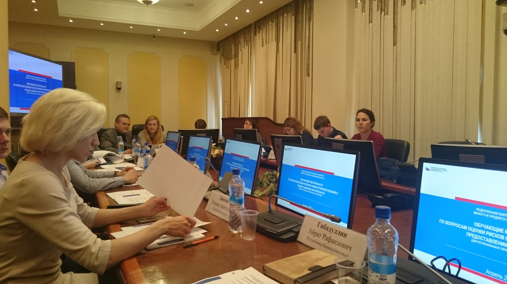

Корпорация МСП обучила представителей региональных гарантийных организаций оценке кредитных рисков
07 апреля 2017 года АО «Федеральная корпорация по развитию малого и среднего предпринимательства» (далее – Корпорация МСП) провела обучение представителей региональных гарантийных организаций (далее - РГО) оценке кредитных рисков. Специальная программа по обучению была разработана Корпорацией МСП в соответствии с запросами РГО.
В мероприятии приняли участие представители 19 региональных гарантийных организаций, в том числе и представитель АО МК «Фонд содействия кредитованию малого и среднего предпринимательства Тамбовской области».
С вступительным словом выступила статс-секретарь-заместитель Генерального директора Н.И. Ларионова.
В ходе обучения сотрудники РГО ознакомились с алгоритмом рассмотрения и принятия решений по заявкам службой риска, а также методикой оценки финансового состояния контрагента.
РГО проводят оценку кредитного риска в отношении поступивших заявок на предоставление поручительств в соответствии с требования к региональным гарантийным организациям, утвержденными Приказом Минэкономразвития России от 28.11.2016 №763 «Об утверждении требований к фондам содействия кредитованию (гарантийным фондам, фондам поручительств) и их деятельности».
АО МК «Фонд содействия кредитованию малого и среднего предпринимательства Тамбовской области» благодарит Корпорацию МСП за проведённое обучение оценке кредитных рисков и надеется на дальнейшее плодотворное сотрудничество.
